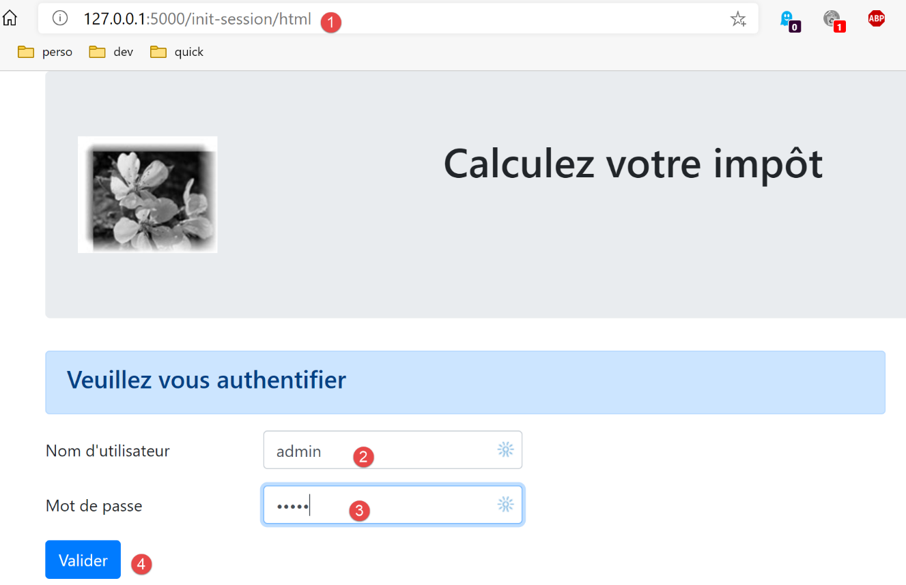
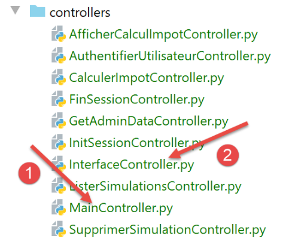
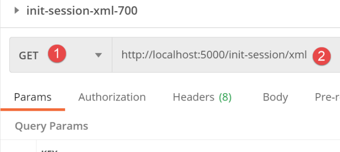
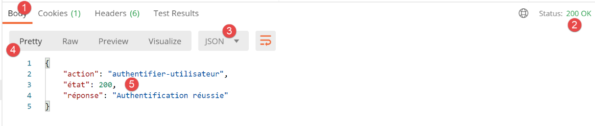
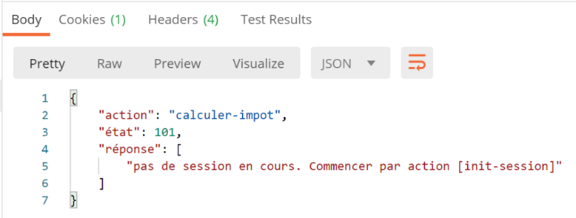
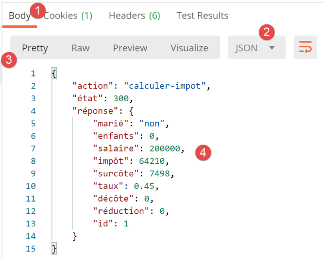
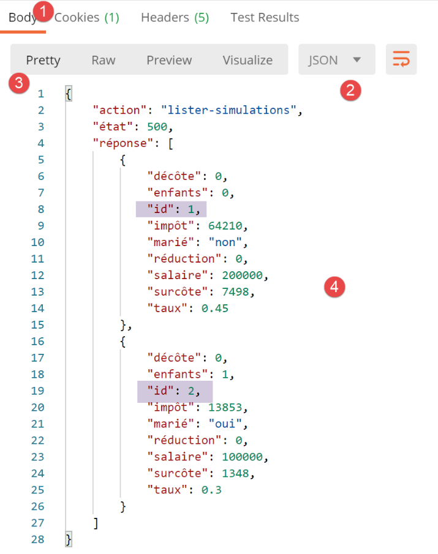

30. Exercício prático: versão 12
Neste capítulo, vamos criar uma aplicação web que siga a arquitetura MVC (Modelo-Vista-Controlador). A aplicação poderá apresentar as suas respostas em três formatos: jSON, XML, HTML. Existe um salto de complexidade entre o que vamos fazer agora e o que foi feito anteriormente. Vamos reutilizar a maioria dos conceitos abordados até agora e detalhar todas as etapas que conduzem à aplicação final.
30.1. Arquitetura MVC
Vamos implementar o modelo de arquitetura denominado MVC (Modelo – Vista – Controlador) da seguinte forma:
O processamento de um pedido de um cliente decorrerá da seguinte forma:
- 1 - pedido
Os URL solicitados terão o formato http://machine:port/action/param1/param2/… O [Contrôleur principal] utilizará um ficheiro de configuração para «encaminhar» o pedido para o controlador correto. Para tal, utilizará o campo [action] do URL. O restante do URL [param1/param2/…] é constituído por parâmetros opcionais que serão transmitidos à ação. O C de MVC é, neste caso, a cadeia [Contrôleur principal, Contrôleur / Action]. Se nenhum controlador puder processar a ação solicitada, o servidor web responderá que a ação URL solicitada não foi encontrada.
- 2 - processamento
- A ação selecionada [2a] pode utilizar os parâmetros parami que a ação [Contrôleur principal] lhe transmitiu. Estes podem provir de duas fontes:
- do caminho [/param1/param2/…] do URL,
- de parâmetros enviados no corpo do pedido do cliente;
- no processamento do pedido do utilizador, a ação pode necessitar da camada [métier] [2b]. Uma vez processado o pedido do cliente, este pode gerar várias respostas. Um exemplo clássico é:
- uma resposta de erro, caso a solicitação não tenha podido ser processada corretamente;
- uma resposta de confirmação, caso contrário;
- o [Contrôleur / Action] enviará a sua resposta [2c] ao controlador principal, juntamente com um código de estado. Estes códigos de estado representarão de forma única o estado em que se encontra a aplicação. Será um código de sucesso ou um código de erro;
- 3 - resposta
- dependendo de o cliente ter solicitado uma resposta jSON, XML ou HTML, o [Contrôleur principal] instanciará o [3a] com o tipo de resposta adequado e solicitará que este envie a resposta ao cliente. O [Contrôleur principal] transmitirá a ele tanto a resposta como o código de estado fornecidos pelo [Contrôleur / Action] que foi executado;
- se a resposta pretendida for do tipo jSON ou XML, a resposta selecionada formatará a resposta do [Contrôleur / Action] que lhe foi fornecida e enviá-la-á para o [3c]. O cliente capaz de utilizar esta resposta pode ser um script de consola Python ou um script JavaScript alojado numa página HTML;
- se a resposta pretendida for do tipo HTML, a resposta selecionada irá selecionar uma das vistas HTML ou [Vuei] utilizando o código de estado que lhe foi fornecido. É o V de MVC. A cada código de estado corresponde uma única vista. Esta vista V irá apresentar a resposta do [Contrôleur / Action] que foi executado. Esta vista apresenta os dados dessa resposta utilizando HTML, CSS e JavaScript. A estes dados chama-se o modelo da vista. É o M de MVC. O cliente é, na maioria das vezes, um navegador;
Agora, vamos esclarecer a relação entre a arquitetura web MVC e a arquitetura em camadas. Dependendo da definição que se der ao modelo, estes dois conceitos estão ou não relacionados. Tomemos como exemplo uma aplicação web MVC de uma camada:

No exemplo acima, cada um dos [Contrôleur / Action] integra uma parte das camadas [métier] e [dao]. Na camada [web] existe, de facto, uma arquitetura MVC, mas a aplicação como um todo não possui uma arquitetura em camadas. Aqui existe apenas uma camada, a camada web, que faz tudo.
Agora, consideremos uma arquitetura web multicamadas:

A camada [web] pode ser implementada sem seguir o modelo MVC. Nesse caso, temos efetivamente uma arquitetura multicamadas, mas a camada web não implementa o modelo MVC.
Por exemplo, no mundo .NET, a camada [web] acimaacima pode ser implementada com ASP.NET e MVC, obtendo-se assim uma arquitetura em camadas com uma camada [web] do tipo MVC. Feito isto, é possível substituir esta camada ASP.NET MVC por uma camada ASP.NET clássica (WebForms), mantendo o resto (domínio de negócio, DAO, controlador) inalterado. Temos então uma arquitetura em camadas com uma camada [web] que já não é do tipo MVC.
Em MVC, indicámos que o modelo M era o da vista V, c.a.d, ou seja, o conjunto de dados apresentados pela vista V. É fornecida outra definição do modelo M de MVC:

Muitos autores consideram que o que se encontra à direita da camada [web] constitui o modelo M do MVC. Para evitar ambiguidades, pode-se referir-se:
- do modelo do domínio, quando nos referimos a tudo o que está à direita da camada [web];
- do modelo da vista, quando nos referimos aos dados apresentados por uma vista V;
Daqui em diante, quando falarmos de modelo, estaremos sempre a referir-nos ao modelo da vista.
30.2. Arquitetura da aplicação cliente/servidor
A aplicação web terá a seguinte arquitetura:
- em [1], o servidor web terá dois tipos de clientes:
- em [2], um cliente de consola que trocará jSON e XML com o servidor;
- em [3], um navegador que receberá HTML do servidor e o exibirá;
- o servidor web [1] mantém as camadas [métier] e [dao] das versões anteriores;
- o cliente web [2] será atualizado para ter em conta as novas URL do serviço da aplicação web;
- a aplicação HTML apresentada pelo navegador tem de ser totalmente reescrita;
Vamos desenvolver a aplicação em várias fases:
- vamos desenvolver a versão jSON do servidor. Iremos testar as funcionalidades do servidor, uma a uma, com um cliente Postman. Este método permite-nos construir a estrutura do servidor web sem nos preocuparmos com as vistas (=HTML) da aplicação;
- depois de testarmos o servidor jSON com o Postman, iremos testá-lo com um cliente de consola;
- depois, passaremos para a versão XML do servidor. Vimos que a transição do jSON para o XML foi trivial;
- por fim, passaremos para a versão HTML do servidor. Iremos construir uma arquitetura MVC e definir as vistas a apresentar. A aplicação HTML será testada tanto com o cliente Postman como com um navegador convencional;
30.3. A estrutura do código do servidor

- em [1: o servidor web na sua totalidade;
- em [2]: por enquanto, ignoraremos as pastas [static, templates, tests_views], que dizem respeito à versão HTML do servidor. Fora desta pasta, encontraremos o script principal [main] e a sua configuração;
- em [3], os controladores do servidor web. Trata-se de instâncias de classes;
 |  |
- no [4], a resposta HTTP do servidor será gerida por classes;
- em [5], mantemos o ficheiro de registos dos servidores anteriores;
Quando criarmos a versão HTML do servidor, outras pastas serão utilizadas:
 |  |
- na versão [6], os elementos estáticos da aplicação HTML;
- no [7], os modelos da aplicação HTML, decompostos em vistas [9] e em fragmentos de vista [8];
- em [9], as classes que implementam os modelos das vistas;
30.4. Os URL do serviço da aplicação
Para construir o servidor web, vamos proceder da seguinte forma:
- a partir das vistas da aplicação HTML, vamos definir as ações que a aplicação web deve implementar. Vamos utilizar aqui as vistas reais, mas poderiam ser simplesmente vistas no papel;
- a partir dessas ações, vamos definir os URL de serviço da aplicação HTML;
- vamos implementar estas URL de serviço com um servidor que fornece jSON. Isto permite definir a estrutura do servidor web sem nos preocuparmos com as páginas HTML a serem fornecidas. Iremos testar estes serviços URL com o Postman;
- depois, testaremos o nosso servidor jSON com um cliente de consola;
- assim que o servidor jSON tiver sido validado, passaremos à programação da aplicação HTML;
A primeira página será a página de autenticação:

- a ação que conduz a esta primeira vista chamar-se-á [init-session] [1];
- ao clicar no botão [Valider], será acionada a ação [authentifier-utilisateur] com dois parâmetros enviados [2-3];
A vista do cálculo do imposto:

- em [1], a ação [authentifier-utilisateur] que conduziu a esta vista;
- em [2], o clique no botão [Valider] desencadeia a execução da ação [calculer-impot] com três parâmetros passados [2-5];
- ao clicar na ligação [6], é acionada a ação [lister-simulations] sem parâmetros;
- ao clicar na ligação [7], é acionada a ação [fin-session] sem parâmetros;
A terceira vista corresponde às simulações realizadas pelo utilizador autenticado:

- em [3], a ação [lister-simulations] que conduziu a esta vista;
- em [2], um clique na ligação [Supprimer] aciona a ação [supprimer-simulation] com um parâmetro: o número da simulação a eliminar da lista;
- um clique na ligação [3] aciona a ação [afficher-calcul-impot] sem parâmetros, que volta a apresentar a vista do cálculo do imposto;
- um clique na ligação [4] aciona a ação [fin-session] sem parâmetros;
Com estas primeiras informações, podemos definir as diferentes ações de serviço do servidor URL:
Ação | Função | Contexto de execução |
/init-session | Serve para definir o tipo (json, xml, html) das respostas pretendidas | Consulta GET Pode ser emitida a qualquer momento |
/autenticar-utilizador | Autoriza ou não um utilizador a iniciar sessão | Pedido POST. A solicitação deve ter dois parâmetros enviados por POST [user, password] Só pode ser emitida se o tipo de sessão (json, xml, html) for conhecido |
/calcular-imposto | Efetua uma simulação de cálculo de impostos | Pedido POST. A solicitação deve conter três parâmetros enviados via POST: [marié, enfants, salaire] Só pode ser emitida se o tipo de sessão (json, xml, html) for conhecido e o utilizador estiver autenticado |
/listar-simulações | Solicita a visualização da lista de simulações realizadas desde o início da sessão | Pedido GET. Só pode ser enviada se o tipo de sessão (json, xml, html) for conhecido e o utilizador estiver autenticado |
/eliminar-simulação/número | Elimina uma simulação da lista de simulações | Solicitação GET. Só pode ser emitida se o tipo da sessão (json, xml, html) for conhecido e o utilizador estiver autenticado |
/exibir-cálculo-imposto | Exibe a página HTML relativa ao cálculo do imposto | Consulta GET. Só pode ser emitida se o tipo de sessão (json, xml, html) for conhecido e o utilizador estiver autenticado |
/fim-sessão | Encerra a sessão de simulações. | Tecnicamente, a sessão web anterior é eliminada e é criada uma nova sessão Só pode ser emitida se o tipo de sessão (json, xml, html) for conhecido e o utilizador estiver autenticado |
Estes diferentes códigos de serviço URL serão utilizados tanto para o servidor HTML como para os servidores jSON ou XML. Duas URL serão utilizadas apenas para estes dois últimos servidores: trata-se das URL da versão anterior do cliente/servidor web que aqui retomamos:
Ação | Função | Contexto de execução |
/get-admindata | Retorna os dados fiscais que permitem o cálculo do imposto | Consulta GET. Só é utilizada se o tipo de sessão for json ou xml. O utilizador deve estar autenticado |
/calcular-impostos | Efetua o cálculo do imposto de uma lista de contribuintes enviada na solicitação jSON | Consulta GET. Utilizada apenas se o tipo da sessão for json ou xml. O utilizador deve estar autenticado |
Todos os controladores associados a estas ações procederão da mesma forma:
- verificarão os seus parâmetros. Estes encontram-se no objeto:
- [request.path] para os parâmetros presentes no URL sob a forma [/action/param1/param2/…];
- no objeto [request.form] para os que são transmitidos no [x-www-form-urlencoded] no corpo do pedido;
- no objeto [request.data] para os que são transmitidos no jSON no corpo da solicitação;
- um controlador assemelha-se a uma função ou método que verifica a validade dos seus parâmetros. No caso do controlador, porém, é um pouco mais complicado:
- os parâmetros esperados podem estar ausentes;
- os parâmetros recuperados pelo controlador são cadeias de caracteres. Se o parâmetro esperado for um número, então o controlador deve verificar se a cadeia de caracteres do parâmetro corresponde efetivamente a um número;
- uma vez verificado que os parâmetros esperados estão presentes e são sintaticamente corretos, é necessário verificar se são válidos no contexto de execução atual. Este contexto está presente na sessão. O exemplo da autenticação é um exemplo de contexto de execução. Certas ações só devem ser processadas depois de o cliente estar autenticado. Geralmente, uma chave na sessão indica se essa autenticação ocorreu ou não;
- uma vez efetuadas as verificações anteriores, o controlador secundário pode começar a trabalhar. Este trabalho de verificação dos parâmetros é muito importante. Não se pode aceitar que um cliente nos envie qualquer coisa em qualquer momento do ciclo de vida da aplicação. É necessário controlar totalmente o ciclo de vida da mesma;
- assim que o seu trabalho estiver concluído, o controlador secundário devolve um dicionário com as chaves [action, état, réponse] ao controlador principal que o chamou:
- [action] é a ação que acabou de ser executada;
- [état] é um número de três dígitos que indica o resultado do processamento da ação:
- [x00] indicará que o processamento foi bem-sucedido;
- [x01] indicará que o processamento falhou;
- [réponse] é o dicionário de resultados na forma {‘resposta’:objeto}. O objeto terá estruturas diferentes consoante a ação processada;
Vamos agora analisar os diferentes controladores ou, o que dá no mesmo, as diferentes ações que esses controladores processam e que marcam o ritmo de funcionamento da aplicação web.
30.5. Configuração do servidor

A configuração da base de dados [config_database], bem como a das camadas do servidor [config_layers], são idênticas às das versões anteriores. O ficheiro [config] apresenta novas informações:
def configure(config: dict) -> dict:
import os
# etapa 1 ------
# pasta deste ficheiro
script_dir = os.path.dirname(os.path.abspath(__file__))
# caminho raiz
root_dir = "C:/Data/st-2020/dev/python/cours-2020/python3-flask-2020"
# dependências
absolute_dependencies = [
# pastas do projeto
# BaseEntity, MyException
f"{root_dir}/classes/02/entities",
# InterfaceImpôtsDao, InterfaceImpôtsMétier, InterfaceImpôtsUi
f"{root_dir}/impots/v04/interfaces",
# AbstractImpôtsdao, ImpôtsConsole, ImpôtsMétier
f"{root_dir}/impots/v04/services",
# ImpotsDaoWithAdminDataInDatabase
f"{root_dir}/impots/v05/services",
# AdminData, ImpôtsError, TaxPayer
f"{root_dir}/impots/v04/entities",
# Constantes, intervalos
f"{root_dir}/impots/v05/entities",
# Logger, SendAdminMail
f"{root_dir}/impots/http-servers/02/utilities",
# scripts [config_database, config_layers]
script_dir,
# controladores
f"{script_dir}/../controllers",
# respostas HTTP
f"{script_dir}/../responses",
# modelos das vistas
f"{script_dir}/../models_for_views",
]
# definir o syspath
from myutils import set_syspath
set_syspath(absolute_dependencies)
# dependências do servidor web
# os controladores
from AfficherCalculImpotController import AfficherCalculImpotController
from AuthentifierUtilisateurController import AuthentifierUtilisateurController
from CalculerImpotController import CalculerImpotController
from CalculerImpotsController import CalculerImpotsController
from FinSessionController import FinSessionController
from GetAdminDataController import GetAdminDataController
from InitSessionController import InitSessionController
from ListerSimulationsController import ListerSimulationsController
from MainController import MainController
from SupprimerSimulationController import SupprimerSimulationController
# as respostas HTTP
from HtmlResponse import HtmlResponse
from JsonResponse import JsonResponse
from XmlResponse import XmlResponse
# os modelos das vistas
from ModelForAuthentificationView import ModelForAuthentificationView
from ModelForCalculImpotView import ModelForCalculImpotView
from ModelForErreursView import ModelForErreursView
from ModelForListeSimulationsView import ModelForListeSimulationsView
# etapa 2 ------
# configuração da aplicação
config.update({
# utilizadores autorizados a utilizar a aplicação
"users": [
{
"login": "admin",
"password": "admin"
}
],
# ficheiro de registos
"logsFilename": f"{script_dir}/../data/logs/logs.txt",
# configuração do servidor SMTP
"adminMail": {
# servidor SMTP
"smtp-server": "localhost",
# porta do servidor SMTP
"smtp-port": "25",
# administrador
"from": "guest@localhost.com",
"to": "guest@localhost.com",
# assunto do e-mail
"subject": "plantage du serveur de calcul d'impôts",
# TLS definido como «True» se o servidor SMTP exigir autenticação; caso contrário, definido como «False»
"tls": False
},
# duração da pausa do thread em segundos
"sleep_time": 0,
# ações autorizadas e os respetivos controladores
"controllers": {
# inicialização de uma sessão de cálculo
"init-session": InitSessionController(),
# autenticação de um utilizador
"authentifier-utilisateur": AuthentifierUtilisateurController(),
# cálculo do imposto no modo individual
"calculer-impot": CalculerImpotController(),
# cálculo do imposto em modo de lotes
"calculer-impots": CalculerImpotsController(),
# lista de simulações
"lister-simulations": ListerSimulationsController(),
# eliminação de uma simulação
"supprimer-simulation": SupprimerSimulationController(),
# fim da sessão de cálculo
"fin-session": FinSessionController(),
# exibição da vista de cálculo do imposto
"afficher-calcul-impot": AfficherCalculImpotController(),
# obtenção dos dados da administração fiscal
"get-admindata": GetAdminDataController(),
# controlador principal
"main-controller": MainController()
},
# os diferentes tipos de resposta (json, xml, html)
"responses": {
"json": JsonResponse(),
"html": HtmlResponse(),
"xml": XmlResponse()
},
# as vistas HTML e os seus modelos dependem do estado devolvido pelo controlador
"views": [
{
# vista de autenticação
"états": [
# /init-session bem-sucedida
700,
# falha na autenticação do utilizador
201
],
"view_name": "views/vue-authentification.html",
"model_for_view": ModelForAuthentificationView()
},
{
# visualização do cálculo do imposto
"états": [
# /autenticar-utilizador bem-sucedido
200,
# /calcular-imposto bem-sucedido
300,
# /calcular-imposto falha
301,
# /exibir-cálculo-de-imposto
800
],
"view_name": "views/vue-calcul-impot.html",
"model_for_view": ModelForCalculImpotView()
},
{
# visualização da lista de simulações
"états": [
# /listar-simulações
500,
# /eliminar-simulação
600
],
"view_name": "views/vue-liste-simulations.html",
"model_for_view": ModelForListeSimulationsView()
}
],
# visualização de erros inesperados
"view-erreurs": {
"view_name": "views/vue-erreurs.html",
"model_for_view": ModelForErreursView()
},
# redirecionamentos
"redirections": [
{
"états": [
400, # /fim-da-sessão bem-sucedida
],
# redirecionamento para
"to": "/init-session/html",
}
],
}
)
# etapa 3 ------
# configuração da base de dados
import config_database
config["database"] = config_database.configure(config)
# etapa 4 ------
# instanciação das camadas da aplicação
import config_layers
config['layers'] = config_layers.configure(config)
# a configuração é finalizada
return config
- até à linha 41, encontramos elementos habituais;
- linhas 43-66: a partir da linha 43, o Python Path do servidor é definido. É então possível importar as dependências do projeto:
- linhas 45-55: a lista de controladores;
- linhas 57-60: a lista de respostas HTTP;
- linhas 62-66: a lista de modelos de visualização;
- linhas 68-189: a configuração da aplicação com uma série de constantes;
- linhas 71-98: já conhecemos estas linhas, que aparecem nas versões anteriores;
- linhas 101-122: o dicionário dos controladores:
- as chaves são os nomes das ações;
- os valores são uma instância do controlador que deve gerir essa ação. Cada controlador é instanciado apenas uma única vez (singleton). A mesma instância será executada por diferentes threads do servidor. Por isso, é necessário ter cuidado com os dados partilhados que cada controlador possa querer alterar;
- linhas 125-129: o dicionário das três respostas possíveis HTTP:
- as chaves correspondem ao tipo de resposta pretendido pelo cliente (jSON, xml, html);
- os valores são uma instância da resposta HTTP. Cada gerador de resposta é instanciado apenas uma única vez (singleton). O mesmo gerador será executado por diferentes threads do servidor. Por isso, é necessário ter cuidado com os dados partilhados que cada gerador possa querer alterar;
- linhas 132-186: configuração das vistas HTML. Por enquanto, ignoramos estas linhas;
- linhas 191-202: já nos deparámos com estas linhas nas versões anteriores;
30.6. Percurso de um pedido do cliente no servidor

Vamos acompanhar o percurso de um pedido do cliente que chega ao servidor até à resposta HTTP enviada em resposta. Segue o percurso do servidor MVC.
30.6.1. O script [main]

O script [main] é idêntico em muitos aspetos ao das versões anteriores. No entanto, apresentamo-lo na íntegra para partirmos de uma base sólida:
# aguarda-se um parâmetro mysql ou pgres
import sys
syntaxe = f"{sys.argv[0]} mysql / pgres"
erreur = len(sys.argv) != 2
if not erreur:
sgbd = sys.argv[1].lower()
erreur = sgbd != "mysql" and sgbd != "pgres"
if erreur:
print(f"syntaxe : {syntaxe}")
sys.exit()
# configurar a aplicação
import config
config = config.configure({'sgbd': sgbd})
# dependências
from flask import request, Flask, session, url_for, redirect
from flask_api import status
from SendAdminMail import SendAdminMail
from myutils import json_response
from Logger import Logger
import threading
import time
from random import randint
from ImpôtsError import ImpôtsError
import os
# envio de um e-mail ao administrador
def send_adminmail(config: dict, message: str):
# envio de um e-mail ao administrador da aplicação
config_mail = config["adminMail"]
config_mail["logger"] = config['logger']
SendAdminMail.send(config_mail, message)
# verificação do ficheiro de registos
logger = None
erreur = False
message_erreur = None
try:
# registo
logger = Logger(config["logsFilename"])
except BaseException as exception:
# registo na consola
print(f"L'erreur suivante s'est produite : {exception}")
# regista-se o erro
erreur = True
message_erreur = f"{exception}"
# o registador é memorizado na configuração
config['logger'] = logger
# gestão do erro
if erreur:
# envio de e-mail ao administrador
send_adminmail(config, message_erreur)
# fim da aplicação
sys.exit(1)
# registo de arranque
log = "[serveur] démarrage du serveur"
logger.write(f"{log}\n")
print(log)
# recuperação de dados da administração fiscal
erreur = False
try:
# admindata será um dado de âmbito da aplicação, apenas para leitura
config["admindata"] = config["layers"]["dao"].get_admindata().asdict()
# registo de sucesso
logger.write("[serveur] connexion à la base de données réussie\n")
except ImpôtsError as ex:
# registo do erro
erreur = True
# registo de erro
log = f"L'erreur suivante s'est produite : {ex}"
# consola
print(log)
# ficheiro de registos
logger.write(f"{log}\n")
# e-mail para o administrador
send_adminmail(config, log)
# o thread principal já não necessita do logger
logger.close()
# se tiver ocorrido um erro, o processo é interrompido
if erreur:
sys.exit(2)
# aplicação Flask
app = Flask(__name__, template_folder="templates", static_folder="static")
# chave secreta da sessão
app.secret_key = os.urandom(12).hex()
# o controlador frontal
def front_controller() -> tuple:
# processamos o pedido
logger = None
…
@app.route('/', methods=['GET'])
def index() -> tuple:
# redirecionamento para /init-session/html
return redirect(url_for("init_session", type_response="html"), status.HTTP_302_FOUND)
# init-session
@app.route('/init-session/<string:type_response>', methods=['GET'])
def init_session(type_response: str) -> tuple:
# executa-se o controlador associado à ação
return front_controller()
# autenticar-utilizador
@app.route('/authentifier-utilisateur', methods=['POST'])
def authentifier_utilisateur() -> tuple:
# executa-se o controlador associado à ação
return front_controller()
# calcular-imposto
@app.route('/calculer-impot', methods=['POST'])
def calculer_impot() -> tuple:
# executa-se o controlador associado à ação
return front_controller()
# listar-simulações
@app.route('/lister-simulations', methods=['GET'])
def lister_simulations() -> tuple:
# executa-se o controlador associado à ação
return front_controller()
# eliminar-simulação
@app.route('/supprimer-simulation/<int:numero>', methods=['GET'])
def supprimer_simulation(numero: int) -> tuple:
# executa-se o controlador associado à ação
return front_controller()
# fim-sessão
@app.route('/fin-session', methods=['GET'])
def fin_session() -> tuple:
# executa-se o controlador associado à ação
return front_controller()
# exibir-cálculo-imposto
@app.route('/afficher-calcul-impot', methods=['GET'])
def afficher_calcul_impot() -> tuple:
# executa-se o controlador associado à ação
return front_controller()
# obter-dados-administrativos
@app.route('/get-admindata/<int:numero>', methods=['GET'])
def get_admindata() -> tuple:
# é executado o controlador associado à ação
return front_controller()
# apenas «main»
if __name__ == '__main__':
# inicia-se o servidor
app.config.update(ENV="development", DEBUG=True)
app.run(threaded=True)
- linhas 1-92: todas estas linhas já foram abordadas e explicadas;
- linha 92: o servidor irá gerir uma sessão. Por isso, precisamos de uma chave secreta. Para cada utilizador, colocaremos duas informações na sessão:
- se o utilizador se autenticou corretamente;
- sempre que efetuar um cálculo de impostos, os resultados desse cálculo serão colocados numa lista a que chamaremos «lista de simulações do utilizador». Esta lista será colocada na sessão;
- linhas 100-151: a lista de URL de serviço do servidor. As funções associadas servem de filtro: todas as URL que não constem desta lista serão rejeitadas pelo servidor Flask com o erro [404 NOT FOUND]. Depois de passar por esta filtragem, o pedido é sistematicamente transmitido a um «Front Controller» implementado pela função [front_controller] das linhas 94-98, que iremos apresentar em breve;
- linhas 100-103: gestão da rota [/]. O ponto de entrada da aplicação web será a função URL da linha 107. Assim, na linha 103, redirecionamos o cliente para esta função URL:
- a função [url_for] é importada na linha 18. Aqui, tem dois parâmetros:
- o primeiro parâmetro é o nome de uma das funções de encaminhamento, neste caso a da linha 107. Vemos que esta função espera um parâmetro [type_response], que corresponde ao tipo de resposta (json, xml, html) pretendido pelo cliente;
- o segundo parâmetro retoma o nome do parâmetro da linha 107, [type_response], e atribui-lhe um valor. Se houvesse outros parâmetros, repetir-se-ia a operação para cada um deles;
- esta função associa o URL à função designada pelos dois parâmetros que lhe foram atribuídos. Neste caso, isso resultará no URL da linha 106, onde o parâmetro é substituído pelo seu valor [/init-session/html];
- a função [redirect] foi importada na linha 18. A sua função é enviar um cabeçalho de redirecionamento HTTP ao cliente:
- o primeiro parâmetro é o URL para o qual o cliente deve ser redirecionado;
- o segundo parâmetro é o código de estado da resposta HTTP enviada ao cliente. O código [status.HTTP_302_FOUND] corresponde a um redirecionamento HTTP;
A função [front_controller] , nas linhas 94-98, efetua os primeiros processamentos do pedido do cliente:
# o controlador frontal
def front_controller() -> tuple:
# processa-se o pedido
logger = None
try:
# registo
logger = Logger(config["logsFilename"])
# armazenamos-a numa configuração associada ao thread
thread_config = {"logger": logger}
thread_name = threading.current_thread().name
config[thread_name] = {"config": thread_config}
# regista-se a solicitação
logger.write(f"[ front_controller] requête : {request}\n")
# interrompe-se o thread, caso tal tenha sido solicitado
sleep_time = config["sleep_time"]
if sleep_time != 0:
# a pausa é aleatória, para que alguns threads sejam interrompidos e outros não
aléa = randint(0, 1)
if aléa == 1:
# registo antes da pausa
logger.write(f"[ front_controller] mis en pause du thread pendant {sleep_time} seconde(s)\n")
# pausa
time.sleep(sleep_time)
# a solicitação é encaminhada para o controlador principal
main_controller = config['controllers']["main-controller"]
résultat, status_code = main_controller.execute(request, session, config)
# regista-se o resultado enviado ao cliente
log = f"[front_controller] {résultat}\n"
logger.write(log)
# ocorreu algum erro fatal?
if status_code == status.HTTP_500_INTERNAL_SERVER_ERROR:
# envia-se um e-mail ao administrador da aplicação
send_adminmail(config, log)
# determina-se o tipo de resposta pretendido
if session.get('typeResponse') is None:
# o tipo de sessão ainda não foi definido — será jSON
type_response = 'json'
else:
type_response = session['typeResponse']
# construi-se a resposta a enviar
response_builder = config["responses"][type_response]
response, status_code = response_builder \
.build_http_response(request, session, config, status_code, résultat)
# a resposta está a ser enviada
return response, status_code
except BaseException as erreur:
# trata-se de um erro inesperado — regista-se o erro, se possível
if logger:
logger.write(f"[ front_controller] {erreur}")
# prepara-se a resposta para o cliente
résultat = {"réponse": {"erreurs": [f"{erreur}"]}}
# envia-se uma resposta em jSON
return json_response(résultat, status.HTTP_500_INTERNAL_SERVER_ERROR)
finally:
# fecha-se o ficheiro de registos caso este tenha sido aberto
if logger:
logger.close()
- linhas 1-57: já conhecemos este código. Era, por exemplo, o código da função denominada [main] no script [main] da versão anterior. Há apenas um aspeto a destacar: o controlador utilizado nas linhas 25-26:
- linha 25: recuperamos na configuração a instância do controlador associada ao nome [main-controller]. Trata-se das seguintes linhas:
# dependências do servidor web
# os controladores
…
from MainController import MainController
# ações autorizadas e os respetivos controladores
"controllers": {
…,
# controlador principal
"main-controller": MainController()
},
- (continuação)
- na linha 10 acima, note-se que se recupera uma instância de classe;
- linha 26: solicita-se ao controlador [MainController] que processe o pedido;
- linhas 30-45: a resposta devolvida pelo controlador [MainController] é enviada ao cliente. Voltaremos a estas linhas um pouco mais tarde;
A função da função [front_controller] e, posteriormente, da classe [MainController] é realizar o trabalho comum a todas as solicitações:
No esquema acima, ainda estamos na fase 1 do processamento da solicitação. O controlador principal [MainController] irá prosseguir com a etapa 1.
30.6.2. O controlador principal [MainController]
O controlador principal [MainController] dá continuidade ao trabalho iniciado pela função [front_controller]:
Todos os controladores implementam a seguinte interface [InterfaceController] [2]:

from abc import ABC, abstractmethod
from werkzeug.local import LocalProxy
class InterfaceController(ABC):
@abstractmethod
def execute(self, request: LocalProxy, session: LocalProxy, config: dict) -> (dict, int):
pass
- A interface [InterfaceController] define apenas o método único [execute] na linha 8. Este método recebe três parâmetros:
- [request]: o pedido do cliente;
- [session]: a sessão do cliente;
- [config]: a configuração da aplicação;
O método [execute] devolve uma tupla de dois elementos:
- o primeiro é o dicionário de resultados na forma {‘ação’: ação, ‘estado’: estado, ‘resposta’: resultados};
- o segundo é o código de estado HTTP a ser devolvido ao cliente;
O controlador principal [MainController] [1] implementa a interface [InterfaceController] da seguinte forma:
# importação de dependências
from flask_api import status
from werkzeug.local import LocalProxy
# controladores da aplicação web
from InterfaceController import InterfaceController
class MainController(InterfaceController):
def execute(self, request: LocalProxy, session: LocalProxy, config: dict) -> (dict, int):
# recuperamos os elementos do caminho
params = request.path.split('/')
action = params[1]
# erros
erreur = False
# o tipo de sessão deve ser conhecido antes de determinadas ações
type_response = session.get('typeResponse')
if type_response is None and action != "init-session":
# regista-se o erro
résultat = {"action": action, "état": 101,
"réponse": ["pas de session en cours. Commencer par action [init-session]"]}
erreur = True
# para determinadas ações, é necessário estar autenticado
user = session.get('user')
if not erreur and user is None and action not in ["init-session", "authentifier-utilisateur"]:
# regista-se o erro
résultat = {"action": action, "état": 101,
"réponse": [f"action [{action}] demandée par utilisateur non authentifié"]}
erreur = True
# Existem erros?
if erreur:
# é enviada uma mensagem de erro
return résultat, status.HTTP_400_BAD_REQUEST
else:
# é executado o controlador associado à ação
controller = config["controllers"][action]
résultat, status_code = controller.execute(request, session, config)
return résultat, status_code
O controlador [MainController] efetua as primeiras verificações da validade do pedido.
- linhas 11-13: o controlador começa por recuperar a ação solicitada pelo cliente. Recorde-se que os URL de serviço têm o formato [/action/param1/param2/…] e que este URL está em [request.path];
- linhas 17-23: a ação [init-session] serve para inicializar o tipo de resposta (json, xml, html) pretendido pelo cliente. Esta informação é colocada na sessão associada à chave [typeRéponse]. Portanto, se a ação não for [init-session], a sessão deve conter a chave [typeRéponse]; caso contrário, o pedido é inválido;
- linhas 21-22: a estrutura do resultado devolvido por cada controlador, neste caso um resultado de erro:
- [action]: é o nome da ação em curso. Isto permitirá obter o seu nome quando se registar o resultado da solicitação;
- [état]: é um código de estado de três dígitos:
- [x00] para sucesso;
- [x01] para um erro;
- [réponse]: é a resposta à consulta. A sua natureza é específica para cada consulta;
- linhas 24-30: a ação [authentifier-utilisateur] serve para autenticar o utilizador. Se for bem-sucedida, é inserida uma chave [user=True] na sessão do utilizador. Algumas ações de serviço URL só são acessíveis a um utilizador autenticado. É isso que se verifica aqui;
- linha 26: apenas as ações [init-session] e [authentifier-utilisateur] podem ser executadas por um utilizador ainda não autenticado;
- linhas 28-29: o resultado a enviar em caso de erro;
- linhas 32-34: se tiver ocorrido um dos dois erros anteriores, envia-se a resposta de erro ao cliente com o estado HTTP 400 BAD REQUEST;
- linhas 35-39: se não tiver ocorrido nenhum erro, passa-se o controlo ao controlador responsável pelo processamento da ação em curso. A sua instância encontra-se na configuração da aplicação;
A classe [MainController] dá continuidade ao trabalho da função [front_controller]: juntas, elas reúnem tudo o que pode ser fatorizado no processamento das solicitações, aguardando o último momento para passar a solicitação a um controlador específico. A divisão do código entre a função [front_controller] e a classe [MainController] é totalmente subjetiva. Neste caso, quis manter o que já estava estabelecido na versão anterior: a função [front_controller] já existia com o nome [main]. Na prática, seria possível:
- colocar tudo na função [front_controller] e eliminar a classe [MainController];
- colocar tudo na classe [MainController] e eliminar a função [front_controller]. É esta solução que eu escolheria, pois tem a vantagem de tornar o código do script principal [main] mais leve;
30.7. Tratamento específico de uma ação
Voltemos à arquitetura MVC da aplicação:
Ainda estamos na etapa 1 acima. Se não tiver ocorrido nenhum erro, a etapa 2 irá começar. O pedido foi transmitido ao controlador específico da ação solicitada pelo pedido. Suponhamos que essa ação seja [/init-session], definida pela rota:
# inicialização da sessão
@app.route('/init-session/<string:type_response>', methods=['GET'])
def init_session(type_response: str) -> tuple:
# é executado o controlador associado à ação
return front_controller()
Esta ação está associada a um controlador na configuração [config]:
# ações autorizadas e os respetivos controladores
"controllers": {
# inicialização de uma sessão de cálculo
"init-session": InitSessionController(),
…
},
O controlador [InitSessionController] (linha 4) assume, portanto, o controlo. O seu código é o seguinte:
from flask_api import status
from werkzeug.local import LocalProxy
from InterfaceController import InterfaceController
class InitSessionController(InterfaceController):
def execute(self, request: LocalProxy, session: LocalProxy, config: dict) -> (dict, int):
# recuperam-se os elementos do caminho
dummy, action, type_response = request.path.split('/')
# Inicialmente, sem erros
erreur = False
# verificação do tipo de resposta
if type_response not in config['responses'].keys():
erreur = True
résultat = {"action": action, "état": 701,
"réponse": [f"paramètre [type={type_response}] invalide"]}
# se não houver erros
if not erreur:
# coloca-se o tipo da sessão na sessão do Flask
session['typeResponse'] = type_response
résultat = {"action": action, "état": 700,
"réponse": [f"session démarrée avec le type de réponse {type_response}"]}
return résultat, status.HTTP_200_OK
else:
return résultat, status.HTTP_400_BAD_REQUEST
- linha 6: tal como os outros controladores, o controlador [InitSessionController] implementa a interface [InterfaceController];
- linha 10: o URL é do tipo [/init-session/type_response]. Recupera-se a ação [init-session] e o tipo de resposta pretendido;
- linha 15: o tipo de resposta pretendido só pode ser um dos que constam na configuração das respostas:
# os diferentes tipos de resposta (json, xml, html)
"responses": {
"json": JsonResponse(),
"html": HtmlResponse(),
"xml": XmlResponse()
},
- caso contrário, prepara-se uma resposta de erro 701 (linha 17);
- linhas 20-25: caso em que o tipo de resposta pretendido seja válido;
- linha 22: o tipo de resposta pretendido é guardado na sessão. Com efeito, será necessário recordá-lo para os pedidos que se seguirão;
- linhas 23-24: prepara-se uma resposta de sucesso 700;
- linha 25: a resposta de sucesso é devolvida ao código chamador;
- linha 27: se tiver ocorrido um erro, a resposta de erro é devolvida ao código chamador;
30.8. Elaboração da resposta HTTP do servidor
Voltemos à arquitetura MVC da aplicação:
Acabámos de ver as etapas 1 e 2. Encontrámos três códigos de estado:
- 700: /init-session foi bem-sucedida;
- 701: /init-session falhou;
- 101: pedido inválido, quer porque a sessão não foi inicializada, quer porque o utilizador não está autenticado;
Vamos analisar como a resposta do servidor será enviada ao cliente durante a etapa 3 acima. Isto ocorre na função [front_controller] do script [main]:
# o controlador frontal
def front_controller() -> tuple:
# processa-se o pedido
logger = None
try:
# registo
logger = Logger(config["logsFilename"])
# armazenamos-a numa configuração associada ao thread
thread_config = {"logger": logger}
thread_name = threading.current_thread().name
config[thread_name] = {"config": thread_config}
# regista-se a solicitação
logger.write(f"[ front_controller] requête : {request}\n")
# interrompe-se o thread, caso tal tenha sido solicitado
sleep_time = config["sleep_time"]
if sleep_time != 0:
# a pausa é aleatória, para que alguns threads sejam interrompidos e outros não
aléa = randint(0, 1)
if aléa == 1:
# registo antes da pausa
logger.write(f"[ front_controller] mis en pause du thread pendant {sleep_time} seconde(s)\n")
# pausa
time.sleep(sleep_time)
# a solicitação é encaminhada para o controlador principal
main_controller = config['controllers']["main-controller"]
résultat, status_code = main_controller.execute(request, session, config)
# regista-se o resultado enviado ao cliente
log = f"[front_controller] {résultat}\n"
logger.write(log)
# ocorreu algum erro fatal?
if status_code == status.HTTP_500_INTERNAL_SERVER_ERROR:
# envia-se um e-mail ao administrador da aplicação
send_adminmail(config, log)
# determina-se o tipo de resposta pretendido
if session.get('typeResponse') is None:
# o tipo de sessão ainda não foi definido — será jSON
type_response = 'json'
else:
type_response = session['typeResponse']
# construi-se a resposta a enviar
response_builder = config["responses"][type_response]
response, status_code = response_builder \
.build_http_response(request, session, config, status_code, résultat)
# a resposta está a ser enviada
return response, status_code
except BaseException as erreur:
# trata-se de um erro inesperado — regista-se o erro, se possível
if logger:
logger.write(f"[ front_controller] {erreur}")
# prepara-se a resposta para o cliente
résultat = {"réponse": {"erreurs": [f"{erreur}"]}}
# envia-se uma resposta em jSON
return json_response(résultat, status.HTTP_500_INTERNAL_SERVER_ERROR)
finally:
# fecha-se o ficheiro de registos, caso tenha sido aberto
if logger:
logger.close()
- Estamos na linha 26: o controlador principal devolveu a sua resposta de erro;
- linhas 27-29: independentemente da resposta do controlador principal (sucesso ou falha), essa resposta é registada no ficheiro de registos;
- linhas 30-33: tal como nas versões anteriores, se o estado HTTP for [500 INTERNAL SERVER ERROR], envia-se um e-mail ao administrador da aplicação com o registo do erro;
- linhas 34-39: vamos enviar a resposta HTTP e o resultado devolvido pelo controlador será colocado no corpo dessa resposta. Precisamos de saber em que formato (json, xml, html) o cliente pretende receber essa resposta. Procuramos o tipo de resposta pretendido na sessão. Se não estiver presente, definimos arbitrariamente esse tipo como jSON;
- linhas 40-43: a resposta HTTP é construída;
No ficheiro de configuração, cada tipo de resposta (json, xml, html) foi associado a uma instância de classe:
# os diferentes tipos de resposta (json, xml, html)
"responses": {
"json": JsonResponse(),
"html": HtmlResponse(),
"xml": XmlResponse()
},
As classes de respostas encontram-se na pasta [responses] da estrutura de diretórios do servidor:

Cada classe de resposta implementa a seguinte interface [InterfaceResponse]:
from abc import ABC, abstractmethod
from flask.wrappers import Response
from werkzeug.local import LocalProxy
class InterfaceResponse(ABC):
@abstractmethod
def build_http_response(self, request: LocalProxy, session: LocalProxy, config: dict, status_code: int,
résultat: dict) -> (Response, int):
pass
- linhas 8-11: a interface [InterfaceResponse] define um único método [build_http_response] com os seguintes parâmetros:
- [request, session, config]: estes são os parâmetros recebidos pelo controlador da ação;
- [résultat, status_code]: são os resultados produzidos pelo controlador da ação;
Vamos apresentar a resposta jSON. Esta é produzida pela seguinte classe [JsonResponse]:
import json
from flask import make_response
from flask.wrappers import Response
from werkzeug.local import LocalProxy
from InterfaceResponse import InterfaceResponse
class JsonResponse(InterfaceResponse):
def build_http_response(self, request: LocalProxy, session: LocalProxy, config: dict, status_code: int,
résultat: dict) -> (Response, int):
# resultados: o dicionário de resultados
# status_code: o código de estado da resposta HTTP
# retornamos a resposta HTTP
response = make_response(json.dumps(résultat, ensure_ascii=False))
response.headers['Content-Type'] = 'application/json; charset=utf-8'
return response, status_code
Conhecemos este código, com o qual já nos deparámos inúmeras vezes. Trata-se do código da função [json_response] do módulo [myutils].
30.9. Primeiros testes
No código analisado, encontrámos três códigos de estado:
- 700: /init-session bem-sucedida;
- 701: /init-session falhou;
- 101: pedido inválido, quer porque a sessão não foi inicializada, quer porque o utilizador não está autenticado;
Vamos tentar obtê-los com uma sessão jSON.
- Iniciamos o servidor web, o SGBD e o servidor de e-mail;
- iniciamos um cliente Postman;
Teste 1
Começamos por apresentar uma solicitação inválida porque a sessão não foi inicializada:

- [1-2]: a consulta [POST http://localhost:5000/authentifier-utilisateur] é uma rota válida:
# autenticar-utilizador
@app.route('/authentifier-utilisateur', methods=['POST'])
def authentifier_utilisateur() -> tuple:
# é executado o controlador associado à ação
return front_controller()
mas só é aceite se a sessão tiver sido iniciada previamente com a ação [/init-session].
Vamos executar a consulta e ver o resultado enviado pelo servidor:

- [1-2]: obtivemos uma resposta jSON. Quando o tipo de resposta ainda não foi definido pelo cliente, o servidor utiliza o jSON para responder;
- [3-5]: o dicionário jSON da resposta;
- [action]: a ação que foi executada;
- [état]: o código de estado da resposta. Um código [x01] indica um erro;
- [réponse]: é adaptada a cada ação. Neste caso, contém uma mensagem de erro;
Agora, vamos iniciar uma sessão com um tipo de resposta incorreto:

- [1-2] é uma rota correta:
# inicializar sessão
@app.route('/init-session/<string:type_response>', methods=['GET'])
def init_session(type_response: str) -> tuple:
# executa-se o controlador associado à ação
return front_controller()
Assim, a solicitação entrará no túnel de processamento de solicitações do servidor MVC. No entanto, deverá ser rejeitada durante esse processamento, uma vez que o tipo de sessão solicitado está incorreto.
A resposta é a seguinte:

- em [4], um código de erro [x01];
- em [5], a explicação do erro;
Agora, vamos iniciar uma sessão jSON:

A resposta é a seguinte:

Agora, vamos iniciar uma sessão XML. A resposta jSON será substituída por uma resposta XML gerada pela seguinte classe [XmlResponse]:
import xmltodict
from flask import make_response
from flask.wrappers import Response
from werkzeug.local import LocalProxy
from InterfaceResponse import InterfaceResponse
from Logger import Logger
class XmlResponse(InterfaceResponse):
def build_http_response(self, request: LocalProxy, session: LocalProxy, config: dict, status_code: int,
résultat: dict) -> (Response, int):
# resultados: o dicionário de resultados
# status_code: o código de estado da resposta HTTP
# resultado: o dicionário a transformar numa cadeia XML
xml_string = xmltodict.unparse({"root": résultat})
# obtém-se a resposta HTTP
response = make_response(xml_string)
response.headers['Content-Type'] = 'application/xml; charset=utf-8'
return response, status_code
Trata-se de código que já conhecemos, o da função [xml_response] do módulo partilhado [myutils].
Inicializamos uma sessão XML:

O resultado do servidor é então o seguinte:

Obtemos a mesma resposta que em jSON, mas, desta vez, a resposta está apresentada como XML.
30.10. A ação [authentifier-utilisateur]
A ação [authentifier-utilisateur] permite autenticar um utilizador que pretenda utilizar a aplicação de cálculo de impostos. O seu percurso é definido da seguinte forma no script [main]:
# autenticar-utilizador
@app.route('/authentifier-utilisateur', methods=['POST'])
def authentifier_utilisateur() -> tuple:
# executa-se o controlador associado à ação
return front_controller()
O servidor aguarda dois parâmetros enviados via POST:
- [user]: o identificador do utilizador;
- [password]: a sua palavra-passe;
A lista de utilizadores autorizados é definida na configuração [config]:
# utilizadores autorizados a utilizar a aplicação
"users": [
{
"login": "admin",
"password": "admin"
}
],
Aqui, temos uma lista com um único elemento.
A ação [authentifier-utilisateur] é processada pelo controlador [AuthentifierUtilisateurController] seguinte:
from flask_api import status
from werkzeug.local import LocalProxy
from InterfaceController import InterfaceController
from Logger import Logger
class AuthentifierUtilisateurController(InterfaceController):
def execute(self, request: LocalProxy, session: LocalProxy, config: dict) -> (dict, int):
# recuperam-se os elementos do caminho
dummy, action = request.path.split('/')
# os parâmetros do POST
post_params = request.form
# código de estado da resposta HTTP
status_code = None
# inicialmente, sem erros
erreur = False
erreurs = []
# é necessário um POST com dois parâmetros
if len(post_params) != 2:
erreur = True
status_code = status.HTTP_400_BAD_REQUEST
erreurs.append("méthode POST requise, paramètre [action] dans l'URL, paramètres postés [user, password]")
if not erreur:
# recuperam-se os parâmetros do POST
# parâmetro [user]
user = post_params.get("user")
if user is None:
erreur = True
erreurs.append("paramètre [user] manquant")
# parâmetro [password]
password = post_params.get("password")
if password is None:
erreur = True
erreurs.append("paramètre [password] manquant")
# erro?
if erreur:
status_code = status.HTTP_400_BAD_REQUEST
# erro?
if not erreur:
# a verificar a validade do par (utilizador, palavra-passe)
users = config['users']
i = 0
nbusers = len(users)
trouvé = False
while not trouvé and i < nbusers:
trouvé = user == users[i]["login"] and password == users[i]["password"]
i += 1
# encontrado?
if not trouvé:
# regista-se o erro
erreur = True
status_code = status.HTTP_401_UNAUTHORIZED
erreurs.append(f"Echec de l'authentification")
else:
# regista-se na sessão que o utilizador foi encontrado
session["user"] = True
# processo concluído
if not erreur:
# retorno sem erro
résultat = {"action": action, "état": 200, "réponse": f"Authentification réussie"}
return résultat, status.HTTP_200_OK
else:
# resposta com erro
return {"action": action, "état": 201, "réponse": erreurs}, status_code
- linha 14: recuperam-se os parâmetros do POST;
- linha 19: a lista de erros encontrados na solicitação;
- linhas 20-24: verifica-se se existem efetivamente dois parâmetros enviados;
- linhas 27-31: verifica-se a presença de um parâmetro [users];
- linhas 32-36: verifica-se a presença de um parâmetro [password];
- linhas 38-39: se os parâmetros enviados estiverem incorretos, prepara-se uma resposta HTTP 400 BAD REQUEST;
- linhas 40-58: verifica-se se as credenciais [user, password] pertencem a um utilizador autorizado a utilizar a aplicação;
- linhas 51-55: se o utilizador (user, password) não estiver autorizado a utilizar a aplicação, prepara-se uma resposta HTTP 401 UNAUTHORIZED;
- linhas 56-58: se estiver autorizado, regista-se na sessão, com a chave [user], que se autenticou;
Note-se que, se o utilizador se tiver autenticado com as credenciais [identifiants1] e não conseguir autenticar-se com as credenciais [identifiants2], continua, no entanto, autenticado com as credenciais [identifiants1].
Vamos realizar alguns testes com o Postman:
- iniciamos o servidor web, o SGBD e o servidor de e-mail;
- com o cliente Postman:
- iniciamos uma sessão com jSON;
- depois, autenticamo-nos;
Eis alguns casos diferentes.
Caso 1: POST sem parâmetros enviados

- em [3-5], o POST não tem corpo;
O resultado da consulta é o seguinte:

- em [2], obtivemos uma resposta HTTP 400 BAD REQUEST;
- ao introduzir [5], obtivemos um código de erro [201];
Caso 2: POST com credenciais incorretas

- em [6], os identificadores estão errados;
O servidor envia a seguinte resposta:

- em [2], a resposta HTTP 401 UNAUTHORIZED;
- em [5], a resposta de erro;
Caso 2: POST com credenciais corretas

- em [6], as credenciais estão corretas;
A resposta do servidor é a seguinte:
- em [2], uma resposta HTTP 200 OK;

- em [5], a resposta de sucesso;
30.11. A ação [calculer_impot]
A ação [calculer_impot] permite calcular o imposto de um contribuinte. O seu percurso é definido da seguinte forma no script [main]:
# calcular-impostos
@app.route('/calculer-impot', methods=['POST'])
def calculer_impot() -> tuple:
# executa-se o controlador associado à ação
return front_controller()
O servidor espera três parâmetros enviados via POST:
- [marié]: sim / não;
- [enfants]: número de filhos do contribuinte;
- [salaire]: salário anual do contribuinte;
O controlador [CalculerImpotController] processa a ação [calculer_impot]:
import re
from flask_api import status
from werkzeug.local import LocalProxy
from InterfaceController import InterfaceController
from TaxPayer import TaxPayer
class CalculerImpotController(InterfaceController):
def execute(self, request: LocalProxy, session: LocalProxy, config: dict) -> (dict, int):
# recuperam-se os elementos do caminho
dummy, action = request.path.split('/')
# sem erros no início
erreur = False
erreurs = []
# os parâmetros do POST
post_params = request.form
# é necessário um POST com três parâmetros
if len(post_params) != 3:
erreur = True
erreurs.append(
"méthode POST requise avec les paramètres postés [marié, enfants, salaire]")
# analisam-se os parâmetros enviados
if not erreur:
# parâmetro casado
marié = post_params.get("marié")
if marié is None:
erreurs.append("paramètre [marié] manquant")
else:
# o parâmetro é válido?
marié = marié.lower()
if marié != "oui" and marié != "non":
erreur = True
erreurs.append(f"valeur [{marié}] invalide pour le paramètre [marié (oui/non)]")
# parâmetro [enfants]
enfants = post_params.get("enfants")
if enfants is None:
erreur = True
erreurs.append("paramètre [enfants] manquant")
else:
# o parâmetro é válido?
enfants = enfants.strip()
match = re.match(r"\d+", enfants)
if not match:
erreur = True
erreurs.append(f"valeur [{enfants}] invalide pour le paramètre [enfants (entier>=0)]")
# parâmetro «salário»
salaire = post_params.get("salaire")
if salaire is None:
erreur = True
erreurs.append("paramètre [salaire] manquant")
else:
# o parâmetro é válido?
salaire = salaire.strip()
match = re.match(r"\d+", salaire)
if not match:
erreur = True
erreurs.append(f"valeur [{salaire}] invalide pour le paramètre [salaire (entier>=0)]")
# erro?
if erreur:
status_code = status.HTTP_400_BAD_REQUEST
résultat = {"action": action, "état": 301, "réponse": erreurs}
# apresenta-se o resultado
return résultat, status_code
# cálculo do imposto
# recuperamos a camada [métier] e o dicionário [adminData]
métier = config["layers"]["métier"]
admin_data = config["admindata"]
# cálculo do imposto
taxpayer = TaxPayer().fromdict({'marié': marié, 'enfants': enfants, 'salaire': salaire})
métier.calculate_tax(taxpayer, admin_data)
# n.º da simulação
id_simulation = session.get('id_simulation', 0)
id_simulation += 1
session['id_simulation'] = id_simulation
# o resultado é inserido na sessão sob a forma de um dicionário de um TaxPayer
simulation = taxpayer.fromdict({'id': id_simulation}).asdict()
# adiciona-se o resultado à lista de simulações já realizadas e esta é inserida na sessão
simulations = session.get("simulations", [])
simulations.append(simulation)
session["simulations"] = simulations
# resultado
résultat = {"action": action, "état": 300, "réponse": simulation}
status_code = status.HTTP_200_OK
# apresenta-se o resultado
return résultat, status_code
- linha 13: recupera-se o nome da ação em curso;
- linha 17: acumulam-se os erros numa lista;
- linha 19: recuperam-se os parâmetros enviados. Estes são enviados sob a forma [x-www-form-urlencoded] e é por isso que são recuperados em [request.form]. Se tivessem sido enviados como jSON, ter-lhes-íamos recuperado como [request.data];
- linhas 21-24: verifica-se se existem efetivamente três parâmetros enviados;
- linhas 27-36: verificação da presença e da validade do parâmetro enviado [marié];
- linhas 37-48: verificação da presença e da validade do parâmetro enviado [enfants];
- linhas 49-60: verificação da presença e da validade do parâmetro enviado [salaire];
- linhas 62-66: se tiver ocorrido um erro, é enviada uma resposta de erro 400 BAD REQUEST com um código de estado [301];
- linhas 69-71: se não tiver havido erro, prepara-se o cálculo do imposto. Para tal,
- linha 70: recupera-se uma referência na camada [métier];
- linha 71: recuperam-se os dados da administração fiscal na configuração do servidor;
- linhas 72-74: o imposto do contribuinte é calculado;
- linhas 75-77: conta-se o número de cálculos de imposto efetuados pelo utilizador;
- linha 76: recupera-se, na sessão, o número do último cálculo efetuado. Denomina-se aqui [simulation] o resultado de um cálculo;
- linha 77: incrementa-se o número da última simulação;
- linha 78: este número é novamente guardado na sessão;
- linhas 79-84: para acompanhar os cálculos efetuados pelo utilizador, vamos colocar na sua sessão a lista das simulações que realizou;
- linha 80: uma simulação será o dicionário de um objeto TaxPayer, cuja propriedade [id] terá como valor o número da simulação;
- linhas 82-84: a simulação atual é adicionada à lista de simulações presente na sessão;
- linhas 86-87: prepara-se uma resposta HTTP de sucesso;
- linha 90: o resultado é devolvido;
Vamos fazer alguns testes: o servidor web, o SGBD, o servidor de e-mail e um cliente Postman são iniciados.
Caso 1: efetuar um cálculo de imposto quando a sessão não está inicializada

A resposta é a seguinte:

Caso 2: efetuar um cálculo de imposto sem estar autenticado
Primeiro, inicia-se uma sessão jSON com [/init-session/json]. Em seguida, efetua-se a mesma consulta que anteriormente. A resposta é então a seguinte:

Caso 3: efetuar um cálculo de imposto com parâmetros em falta
Inicializa-se uma sessão jSON, autentica-se e, em seguida, efetua-se a seguinte consulta:

- em [5], falta o parâmetro [marié];
A resposta é a seguinte:
Caso 4: efetuar um cálculo de imposto com parâmetros errados


A resposta do servidor é a seguinte:

Caso 4: efetuar um cálculo de imposto com parâmetros corretos

A resposta do servidor é a seguinte:

30.12. A ação [lister-simulations]
A ação [lister-simulations] permite que um utilizador consulte a lista das simulações que realizou desde o início da sessão. O seu percurso é definido da seguinte forma no script [main]:
# listar-simulações
@app.route('/lister-simulations', methods=['GET'])
def lister_simulations() -> tuple:
# executa-se o controlador associado à ação
return front_controller()
O servidor não espera nenhum parâmetro. A ação [lister-simulations] é processada pelo controlador [ListerSimulationsController] a seguir:
from flask_api import status
from werkzeug.local import LocalProxy
from InterfaceController import InterfaceController
class ListerSimulationsController(InterfaceController):
def execute(self, request: LocalProxy, session: LocalProxy, config: dict) -> (dict, int):
# recuperam-se os elementos do caminho
dummy, action = request.path.split('/')
# recupera-se a lista de simulações na sessão
simulations = session.get("simulations", [])
# retorna-se o resultado
return {"action": action, "état": 500,
"réponse": simulations}, status.HTTP_200_OK
- linha 13: a lista de simulações é obtida da sessão;
- linhas 15-16: é devolvida uma resposta de sucesso;
Vamos realizar o seguinte teste no Postman:
- iniciamos uma sessão jSON;
- autentificamo-nos;
- efetua-se dois cálculos de impostos;
- solicitamos a lista de simulações;
A solicitação é a seguinte:
- em [3], não há nenhum parâmetro;

A resposta do servidor é a seguinte:

- em [4], a lista de simulações do utilizador;
30.13. A ação [supprimer-simulation]
A ação [supprimer-simulation] permite que um utilizador elimine uma das simulações da sua lista de simulações. O seu percurso é definido da seguinte forma no script [main]:
# eliminar-simulação
@app.route('/supprimer-simulation/<int:numero>', methods=['GET'])
def supprimer_simulation(numero: int) -> tuple:
# executa-se o controlador associado à ação
return front_controller()
O servidor espera um único parâmetro: o número da simulação a eliminar. A ação [supprimer-simulation] é processada pelo controlador [SupprimerSimulationController] a seguir:
from flask_api import status
from werkzeug.local import LocalProxy
from InterfaceController import InterfaceController
class SupprimerSimulationController(InterfaceController):
def execute(self, request: LocalProxy, session: LocalProxy, config: dict) -> (dict, int):
# recuperam-se os elementos do caminho
dummy, action, numéro = request.path.split('/')
# o parâmetro [numéro] é um número inteiro positivo ou nulo, de acordo com a sua rota
numéro = int(numéro)
# a simulação com id=número deve existir na lista de simulações
simulations = session.get("simulations", [])
liste_simulations = list(filter(lambda simulation: simulation['id'] == numéro, simulations))
if not liste_simulations:
msg_erreur = f"la simulation n° [{numéro}] n'existe pas"
# é apresentado o erro
return {"action": action, "état": 601, "réponse": [msg_erreur]}, status.HTTP_400_BAD_REQUEST
# eliminação da simulação com id=número
simulation = liste_simulations.pop(0)
simulations.remove(simulation)
# as simulações são repostas na sessão
session["simulations"] = simulations
# apresenta o resultado
return {"action": action, "état": 600, "réponse": simulations}, status.HTTP_200_OK
- linha 10: recuperam-se os dois elementos do caminho da solicitação. Estes são recuperados como cadeias de caracteres;
- linha 13: o parâmetro [numéro] é convertido num número inteiro. Sabemos que isso é possível devido à assinatura da sua rota,
@app.route('/supprimer-simulation/<int:numero>', methods=['GET'])
Sabemos ainda que se trata de um número inteiro >=0. De facto, não é possível ter um URL ou um [/supprimer-simulation/-4]. Estes são rejeitados pelo servidor Flask;
- linha 15: recuperamos a lista de simulações da sessão;
- linha 16: com a função [filter], procura-se a simulação cujo id é igual ao número. Obtém-se um objeto [filter] que se converte para o tipo [list];
- linhas 17-20: se o filtro não devolveu nenhum resultado, significa que a simulação a eliminar não existe. É devolvida uma resposta de erro que indica isso;
- linhas 21-23: elimina-se a simulação devolvida pelo filtro;
- linha 25: reintroduz-se a nova lista de simulações na sessão;
- linha 27: devolvemos, na resposta, a nova lista de simulações;
Fazemos um teste de sucesso e um teste de falha. Realizamos simulações e, em seguida, solicitamos a lista de simulações:

- as simulações têm aqui os n.ºs 2 e 3;
Solicita-se a eliminação da simulação com o n.º 3.

A resposta é a seguinte:
Agora, vamos repetir a mesma operação (eliminação da simulação com id=3). A resposta é então a seguinte:


30.14. A ação [fin-session]
A ação [fin-session] permite que um utilizador termine a sua sessão de simulações. O seu percurso é definido da seguinte forma no script [main]:
# fim da sessão
@app.route('/fin-session', methods=['GET'])
def fin_session() -> tuple:
# executa-se o controlador associado à ação
return front_controller()
O servidor não espera nenhum parâmetro. A ação é processada pelo controlador [FinSessionController] a seguir:
from flask_api import status
from werkzeug.local import LocalProxy
from InterfaceController import InterfaceController
class FinSessionController(InterfaceController):
def execute(self, request: LocalProxy, session: LocalProxy, config: dict) -> (dict, int):
# recuperam-se os elementos do caminho
dummy, action = request.path.split('/')
# eliminam-se todas as chaves da sessão atual
session.clear()
# retorna-se o resultado
return {"action": action, "état": 400, "réponse": "session réinitialisée"}, status.HTTP_200_OK
- linha 13: são eliminadas todas as chaves da sessão. Isto elimina:
- [typeResponse]: o tipo das respostas HTTP (json, xml, html);
- [id_simulation]: o número da última simulação realizada;
- [simulations]: a lista de simulações do utilizador;
- [user]: o indicador de que o utilizador foi autenticado;
- retorna-se a resposta;
Podemos questionar-nos sobre como será devolvida a resposta HTTP da linha 15, agora que o tipo de resposta já não se encontra na sessão. Para saber isso, é necessário voltar à função |front_controller| do script principal [main] e alterá-la da seguinte forma:
…
# on not# regista-se o tipo de resposta pretendido, caso essa informação esteja na sessão
type_response1 = session.get('typeResponse', None)
# a solicitação é encaminhada para o controlador principal
main_controller = config['controllers']["main-controller"]
résultat, status_code = main_controller.execute(request, session, config)
# regista-se o resultado enviado ao cliente
log = f"[front_controller] {résultat}\n"
logger.write(log)
# ocorreu algum erro fatal?
if status_code == status.HTTP_500_INTERNAL_SERVER_ERROR:
# envia-se um e-mail ao administrador da aplicação
send_adminmail(config, log)
# determina-se o tipo de resposta pretendido
type_response2=session.get('typeResponse')
if type_response2 is None and type_response1 is None:
# o tipo de sessão ainda não foi definido — será jSON
type_response = 'json'
elif type_response2 is not None:
# o tipo de resposta é conhecido e está na sessão
type_response = type_response2
else:
type_response=type_response1
# está a ser construída a resposta a enviar
response_builder = config["responses"][type_response]
response, status_code = response_builder \
.build_http_response(request, session, config, status_code, résultat)
# envia-se a resposta
return response, status_code
- linha 3: o tipo de resposta atualmente na sessão é memorizado;
- linha 6: a ação é executada. Se for:
- [fin-session], a chave [typeResponse] deixa de estar presente na sessão;
- [init-session], a chave [typeResponse] da sessão pode ter alterado o seu valor;;
- linhas 14-20: deve ser emitida a resposta HTTP. É necessário saber em que formato:
- linhas 16-18: se o tipo da resposta não estiver definido nem por [type_response1] da linha 3, nem por [type_response2] da linha 15, então o tipo de resposta não estava definido nem antes nem depois da ação. Nesse caso, utiliza-se jSON (linha 18);
- linhas 19-21: se [type_response2] existir, o tipo na sessão após a ação, então é esse tipo que deve ser utilizado;
- linhas 22-23: caso contrário, deve ser utilizado o [type_response1], o tipo de resposta antes da ação (que é necessariamente o [fin-session]);
30.15. A ação [get-admindata]
Passamos agora às duas respostas URL reservadas aos serviços jSON e XML:
Ação | Função | Contexto de execução |
/get-admindata | Retorna os dados fiscais que permitem o cálculo do imposto | Consulta GET. Só é utilizada se o tipo de sessão for json ou xml. O utilizador deve estar autenticado |
/calcular-impostos | Efetua o cálculo do imposto de uma lista de contribuintes enviada em jSON | Consulta GET. Só é utilizada se o tipo da sessão for json ou xml. O utilizador deve estar autenticado |
A URL [/get-admindata] é definida nas rotas do script principal [main] da seguinte forma:
# get-admindata
@app.route('/get-admindata', methods=['GET'])
def get_admindata() -> tuple:
# executa-se o controlador associado à ação
return front_controller()
A rota [/get-admindata] é processada pelo controlador [GetAdminDataController] a seguir:
# importação das dependências
from flask_api import status
from werkzeug.local import LocalProxy
from InterfaceController import InterfaceController
class GetAdminDataController(InterfaceController):
def execute(self, request: LocalProxy, session: LocalProxy, config: dict) -> (dict, int):
# recuperam-se os elementos do caminho
dummy, action = request.path.split('/')
# apenas as sessões JSON e XML são aceites
type_response = session.get('typeResponse')
if type_response != 'json' and type_response != 'xml':
# retorna uma resposta de erro
return {
"action": action,
"état": 1001,
"réponse": ["cette action n'est possible que pour les sessions json ou xml"]
}, status.HTTP_400_BAD_REQUEST
else:
# retorna-se uma resposta de sucesso
return {"action": action, "état": 1000, "réponse": config["adminData"].asdict()}, status.HTTP_200_OK
- linhas 13-21: verifica-se se estamos numa sessão JSON ou XML;
- linha 24: é devolvido o dicionário de dados da administração fiscal que, logo no arranque do servidor, tinha sido colocado na configuração:
# «admindata» será um dado de âmbito da aplicação, apenas para leitura
config["admindata"] = config["layers"]["dao"].get_admindata()
Utilizemos o cliente Postman e solicitemos o URL [/get-admindata], após ter iniciado uma sessão jSON e ter-nos autenticado:

A resposta do servidor é a seguinte:

30.16. A ação [calculer-impots]
A ação [calculer-impots] calcula os impostos de uma lista de contribuintes encontrada no corpo do pedido sob a forma de uma cadeia jSON. Já conhecemos esta ação: na versão anterior, chamava-se [calculate_tax_in_bulk_mode].
O seu percurso é o seguinte:
# cálculo do imposto em lotes
@app.route('/calculer-impots', methods=['POST'])
def calculer_impots():
# é executado o controlador associado à ação
return front_controller()
Esta ação é processada pelo controlador [CalculerImpotsController] a seguir:
import json
from flask_api import status
from werkzeug.local import LocalProxy
from ImpôtsError import ImpôtsError
from InterfaceController import InterfaceController
from TaxPayer import TaxPayer
class CalculerImpotsController(InterfaceController):
def execute(self, request: LocalProxy, session: LocalProxy, config: dict) -> (dict, int):
# recuperam-se os elementos do caminho
dummy, action = request.path.split('/')
# apenas são aceites sessões JSON e XML
type_response = session.get('typeResponse')
if type_response != 'json' and type_response != 'xml':
# retorna-se uma resposta de erro
return {
"action": action,
"état": 1501,
"réponse": ["cette action n'est possible que pour les sessions json ou xml"]
}, status.HTTP_400_BAD_REQUEST
# recupera-se o corpo da publicação — espera-se uma lista de dicionários
msg_erreur = None
list_dict_taxpayers = None
# o corpo jSON do POST
request_text = request.data
try:
# que se transforma numa lista de dicionários
list_dict_taxpayers = json.loads(request_text)
except BaseException as erreur:
# observa-se o erro
msg_erreur = f"le corps du POST n'est pas une chaîne jSON valide : {erreur}"
# temos uma lista não vazia?
if not msg_erreur and (not isinstance(list_dict_taxpayers, list) or len(list_dict_taxpayers) == 0):
# regista-se o erro
msg_erreur = "le corps du POST n'est pas une liste ou alors cette liste est vide"
# temos uma lista de dicionários?
if not msg_erreur:
erreur = False
i = 0
while not erreur and i < len(list_dict_taxpayers):
erreur = not isinstance(list_dict_taxpayers[i], dict)
i += 1
# erro?
if erreur:
msg_erreur = "le corps du POST doit être une liste de dictionnaires"
# erro?
if msg_erreur:
# envia-se uma resposta de erro ao cliente
résultats = {"action": action, "état": 1501, "réponse": [msg_erreur]}
return résultats, status.HTTP_400_BAD_REQUEST
# verificam-se os TaxPayers um a um
# Inicialmente, não há erros
list_erreurs = []
for dict_taxpayer in list_dict_taxpayers:
# cria-se um TaxPayer a partir de dict_taxpayer
msg_erreur = None
try:
# a operação seguinte irá eliminar os casos em que os parâmetros não são
# das propriedades da classe TaxPayer, bem como os casos em que os seus valores
# estejam incorretos
TaxPayer().fromdict(dict_taxpayer)
except BaseException as erreur:
msg_erreur = f"{erreur}"
# algumas chaves têm de estar presentes no dicionário
if not msg_erreur:
# as chaves [marié, enfants, salaire] têm de estar presentes no dicionário
keys = dict_taxpayer.keys()
if 'marié' not in keys or 'enfants' not in keys or 'salaire' not in keys:
msg_erreur = "le dictionnaire doit inclure les clés [marié, enfants, salaire]"
# erros?
if msg_erreur:
# observa-se o erro no próprio TaxPayer
dict_taxpayer['erreur'] = msg_erreur
# adiciona-se o TaxPayer à lista de erros
list_erreurs.append(dict_taxpayer)
# foram processados todos os contribuintes — existem erros?
if list_erreurs:
# envia-se uma resposta de erro ao cliente
résultats = {"action": action, "état": 1501, "réponse": list_erreurs}
return résultats, status.HTTP_400_BAD_REQUEST
# sem erros, podemos prosseguir
# recuperação dos dados da administração fiscal
admindata = config["admindata"]
métier = config["layers"]["métier"]
try:
# processa-se os TaxPayer um a um
list_taxpayers = []
for dict_taxpayer in list_dict_taxpayers:
# cálculo do imposto
taxpayer = TaxPayer().fromdict(
{'marié': dict_taxpayer['marié'], 'enfants': dict_taxpayer['enfants'],
'«salário»: dict_taxpayer['salaire']})
métier.calculate_tax(taxpayer, admindata)
# guardamos o resultado como um dicionário
list_taxpayers.append(taxpayer.asdict())
# adiciona-se list_taxpayers às simulações atuais, atribuindo um número a cada simulação
simulations = session.get("simulations", [])
id_simulation = session.get("id_simulation", 0)
for simulation in list_taxpayers:
# atribui-se um número a cada simulação
id_simulation += 1
simulation['id'] = id_simulation
# adiciona-se à lista atual de simulações
simulations.append(simulation)
# reinicia-se a sessão
session["simulations"] = simulations
session["id_simulation"] = id_simulation
# envia-se a resposta ao cliente
return {"action": action, "état": 1500, "réponse": list_taxpayers}, status.HTTP_200_OK
except ImpôtsError as erreur:
# envia-se uma resposta de erro ao cliente
return {"action": action, "état": 1501, "réponse": [f"{erreur}"]}, status.HTTP_500_INTERNAL_SERVER_ERROR
- linhas 16-24: verifica-se se estamos efetivamente numa sessão JSON ou XML
- linhas 26-120: este código é-nos, em geral, conhecido. Trata-se do código da função |index_controller| da versão 10 da aplicação, que foi adaptado para cumprir as especificações da interface [InterfaceController] implementada;
- linhas 104-115: o código adicionado para ter em conta o novo ambiente deste controlador. Acabámos de efetuar cálculos de impostos. Temos de guardar os resultados na lista de simulações mantida na sessão;
- linha 105: recuperamos a lista de simulações da sessão;
- linha 106: recupera-se o n.º da última simulação efetuada;
- linhas 107-112: percorremos a lista de dicionários dos resultados do cálculo do imposto; a cada um deles atribuímos um n.º de simulação [id] e cada dicionário é adicionado à lista de simulações;
- linhas 113-115: a nova lista de simulações, bem como o número da última simulação efetuada, são repostos na sessão;
Realizamos o seguinte teste no Postman, após ter inicializado uma sessão jSON e ter efetuado a autenticação:


A resposta do servidor é a seguinte:

Se, agora, solicitarmos a lista de simulações:
Notamos que, na lista de resultados de [/calcul-impots], os contribuintes não têm o atributo [id], enquanto que, na lista de simulações, cada simulação tem um número que a identifica.